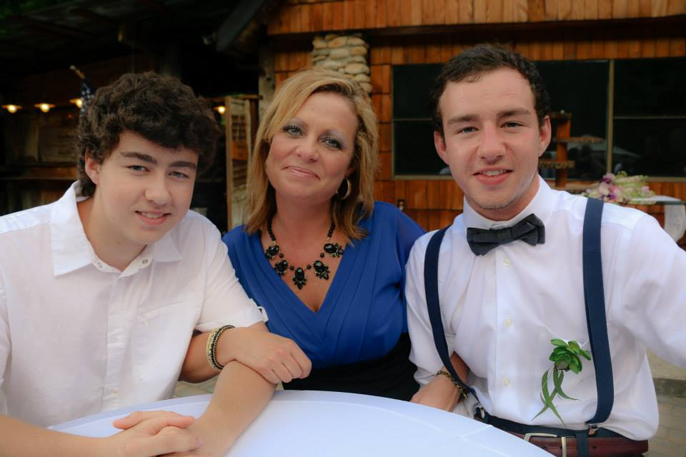

My name is Devan Issac and I am currrently a senior in college at NCSU with a graduation date of May 2018. My current passion in the software world is general purpose programming languages like Java and C/C++. I hope to get a fundamental mastery of these languages in the near future. For more information about me please visit my contact page to get in touch.
I am currently seeking full-time employment in the software development world post-graduation.
Duration: Aug 2015 - May 2018 (Anticipated)
Degree: Bachelors in Computer Science
Major GPA - 3.45/4.0
Coursework
Fall 2015:
Assistant Manager, Lead Associate Manager, Sales Associate
2010 - 2015 (Full Time), 2015 - 2017 (Summer Breaks)
The Assistant Store Manager assists and supports the Store Manager for the daily operations of the store. He/she also makes sure that standards and goals are being followed and achieved. He/she also takes part in helping the employees achieve growth both personally and career wise. He/she will assist with store inventory and merchandise movement.